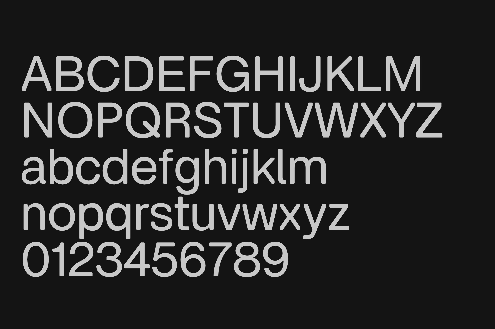

Virtua Grotesk is a geometric grotesk type family built around a system of chamfered construction details. Its sharp junctions are cut with consistent 45-degree bevels, giving the design a technical texture without turning it into a display-only novelty. The family is drawn with monolinear strokes, open counters, and a compact weight range intended for clear hierarchy from Regular to Bold. To contribute, see github.com/eliheuer/virtua-grotesk.

The design started from the idea that a grotesk can be systematic without feeling sterile. Instead of relying on contrast or ornamental terminals, Virtua Grotesk uses repeated angled corners as its main structural voice. This detail is visible in Latin capitals, punctuation, numerals, and interface-scale forms, where the bevels help distinguish the family from more neutral sans serif designs. Round letters keep generous counters and smooth curves, balancing the mechanical rhythm of the chamfered forms.
Virtua Grotesk is designed as a variable font with a Weight axis. The axis runs from Regular to Bold and includes intermediate static styles for common text and interface use. Across the weight range, the design keeps its outer proportions stable where possible while gaining weight through counter reduction. This approach helps preserve the family silhouette as text moves from lighter paragraph settings to heavier labels, headings, and display use.
The family includes Latin and Arabic support. The Arabic design follows the same geometric, monolinear attitude as the Latin while requiring separate attention to joining behavior, positional forms, marks, and right-to-left text shaping. The shared construction idea is intended to make mixed-script typography feel related without forcing either script into the habits of the other.
صُممت Virtua Grotesk لتجمع بين اللاتينية والعربية ضمن نظام بصري واحد. تعتمد الأشكال العربية على بناء هندسي أحادي السمك وزوايا مشطوفة، مع الحفاظ على متطلبات الاتصال وتشكيل الحروف من اليمين إلى اليسار.
The typeface is built for settings where structure should be visible but not overbearing. In text sizes, the chamfers act as small moments of texture rather than decoration. In larger sizes, the same construction becomes more legible and gives headlines a crisp, engineered rhythm. This makes the family useful for projects that need a neutral sans serif foundation but still benefit from a recognizable voice across navigation, captions, labels, and display typography.
Virtua Grotesk is useful for interfaces, editorial systems, and display typography that need a sturdy grotesk voice with a visible construction logic. Its personality comes from repeated decisions at small scales: clipped corners, controlled curves, even spacing, and a weight range that stays practical for reading while still giving headings a distinct presence.